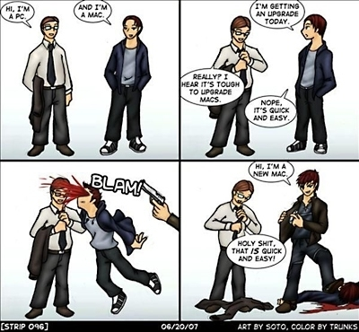

Холивара пост

Я тут на днях послушал выпуск DroiderCast, в котором в числе прочего рассказывали про новый iPad Pro, который показывали на последней выставке WWDC. С восторгом говорили, что теперь к айпаду можно подключать USB накопители и даже мыши и клавиатуры! Ещё отдельного упоминания удостоился тот факт, что теперь на айпаде (о, чудо-то какое!) можно ДАЖЕ просматривать свойства файлов! Ну офигеть! Дожили! Эм... Что? Я был не в курсе, но выходит, что к айпадам нельзя было подключать USB устройства? Если честно, я в полном шоке. Андроид это умеет на минуточку с 2011-го года и версии 2.3.4. У меня и в мыслях не было, что айпады могут этого не уметь. Для меня возможность подключить что-либо к планшету или телефону (по крайней мере для флагманов) являлась чем-то само собой разумеющимся.
Теги: android-soft, mac, мысли-вслух
Про беспроводные клавиатуры от Apple

Ещё несколько слов о магии Apple, о которой многие любят рассказывать. Есть есть такая замечательная клавиатура - Apple Magic Keyboard. Работает через Bluetooth, использует батарейки или аккумуляторы AA, многим очень нравится и стоит на текущий момент в среднем от семи до девяти тысяч рублей. То, что просто положить их на полку и забыть о них на пару лет нельзя, я уже рассказывал в конце вот этого поста. Там для того, чтобы извлечь из новой, но неиспользовавшейся какое-то время клавиатуры батарейки, пришлось её сверлить. После экзекуций на клавиатуре перестали работать несколько клавиш. Покажите мне клавиатуру другого производителя, которая была бы оснащена подобной "функцией"! По-моему, только у apple новая клавиатура за 7+ тысяч рублей может выйти из строя, просто лёжа на полке. Я прямо восхищаюсь этой компанией! И это тоже не одиночный случай. Вот, недавно натолкнулся ещё на одну статью на хабре, описывающую ту же самую проблему: https://habr.com/ru/post/379771/. На этот раз сверлили и распиливали клавиатуру более удачно - она осталась жива. Конечно, это проблема скорее источников питания, чем клавиатуры как таковой. Но у меня подобные проблемы с батарейками возникали и в других клавиатурах. Там же достаточно было лёгким движением руки открыть крышку батарейного отсека, достать батареи и хорошо почистить контакты. Мне совершенно не нужны были для этих действий ножовка по металлу, молоток, отвёртка и дрель. Хотел пошутить про то, что для смены батареи или памяти в макбуке наверное скоро придётся пользоваться кувалдой и перфоратором, но вовремя вспомнил, что для этого теперь нужна паяльная станция, набор инструментов и неплохие навыки пайки мелких компонентов, хотя не уверен, что и это поможет - память теперь распаяна на плате и если вы хотите добавить или сменить память, вам нужно приобрести новый ноутбук. Замена батареи - тоже квест - банки залиты термоклеем. При неправильном прогреве для смены аккумуляторов можно довольно легко вывести макбук из строя.
Теги: mac, hardware, keyboards
Про очередное подгорание и чёрную магию яблочной компании
Другие части эпопеи можно найти тут.

 Думаете, у меня подгорает нижняя чакра? Не угадали. Подгорает, но у макбука. Порт зарядки. MagSafe2. Контакты обуглились. Слово Safe в названии как бы намекает, что обугливающиеся контакты и разъём, нагревающийся до 80+ градусов цельсия при зарядке - это безопасно. Наверное контакты обугливаются безопаснее в 2 раза по сравнению с предыдущим MagSafe. К слову, переходник с MagSafe на MagSafe2 стоит около тысячи рублей (не напрягаясь можно найти за полторы). Кусочек алюминия с четырьмя медными контактами и магнитиком. Адаптер этот весит примерно около 20-25 грамм. Вес одного грамма серербра сегодня составляет около 110 рублей за грамм. Одним словом, под видом адаптеров питания продаётся алюминий и медь по цене в половину цены серебра. Отличный способ экстремально дорого продавать самый распространённый на земле металл! Мне кажется, я в своей жизни занимаюсь чем-то не тем. Разъём для макбука с заменой (кусочек текстолита, четыре медных контакта, кусок металла, немного проводов и пластиковый коннектор - это три с половиной тысячи рублей. Три года ноутбуку, а в него уже вложено 1500 за профилактику + 7500 замена батареи + 3500 за разъём. Итого 12 тысяч рублей. Ноутбук, на котором я работаю дома последние полтора года, стоил мне чуть больше 12 тысяч рублей.
Теги: mac
Про надёжность, часть N+2

В эфире наша традиционная рубрика о качестве железа Apple. Всё чаще меня посещают мысли о запланированном устаревании. Создаётся стойкое впечатление, что продукция Apple рассчитана на 2 - 3 года, после чего вы должны пойти в авторизованный сервис-центр и вложить какое-то количество денег в ремонт (который вероятно, влетит в копеечку), либо просто выбросить свой макбук, монитор или ещё что-то и купить новый. Ссылки на предыдущие посты серии приводить не буду, смотрите по тегу "mac".
С прошлого поста прошло 5 дней, за это время я столкнулся с некоторыми проблемами особенностями продукции Apple. Девушка, которой я выдал другой мак на замену (я писал об этом в одном из прошлых постов, попросила восстановить её заметки, там была некая важная информация.
Теги: mac
Про надёжность, часть N+1

Похоже, повествование о надёжности маков превращается в санта-барбару. Я даже новую картинку рисовать не буду, пусть это фекалояблоко остаётся логотипом - довольно неплохо отражает суть. Ссылки на предыдущие части тут и тут.
Прошло 11 дней. У макбука разработчика, которому вернул машину в конце предыдущей эпопеи, отвалиась ножка. Это для маков тоже нормально - они ноги откидывают постоянно, у нас есть целый пакет сменных ножек для маков в кладовке. Но конечно же, на более новых макбуках ножки отличаются от старых и похоже, нужно заводить ещё один пакет. Вот в чём вообще должна быть существенная причина, чтобы сменить одни ножки на другие? Кстати, винты на маках тоже изменились. Сначала были под крестовой шлиц, потом под торкс, теперь на новых шлиц похож на торкс, но с пятью вершинами - звезда. Полная звезда, когда тебе нужно этот мак открыть. Пришлось искать и добывать соответствующую отвёртку, чтобы всегда была под рукой в хозяйстве. Надо сказать, что когда в сервисе меняют самовыкрутившиеся винтики (да-да, маки и винтики теряют только в путь) на старых ноутбуках - тоже ставят "звездатые", чтобы жизнь мёдом не казалась. Но это всё мелочи.
Далее одна из сотрудниц показала, что её мак попросил замены батереи. На удивление скромно попросил, без спецэффектов, даже не выдавив тачпад, не погнув алюминиевую крышку - это скорее исключение, нежели правило. Зато у второй возникла довольно интересная проблема.
Теги: mac
Вдогонку про качество
Прошло чуть менее двух недель с того момента, когда у меня было зарегистрировано резкое повышение температуры нижней чакры в отношении качества и надёжности продукции Apple. Не могу сказать, что с тех пор утекло много воды, но за это время на маке одного из наших разработчиков батарея превратилась в подушку и выгнула алюминиевую нижнюю крышку корпуса. Да, я понимаю, это старая добрая традиция в отношении макбуков про, но этот был выпущен в середине 2014-го года, то есть, прошло около 4-х лет. Мы не стали дожидаться, пока батарея выдавит тачпад наружу и отрутили бОльшую часть болтов на нижней крышке, остальные просто ослабив. Самое замечательное, что когда-то разъём зарядки в макбуках (mac safe) изменился. Какой в этом был таинственный глубокий смысл - я решительно не понимаю! В итоге, для новых зарядных устройств есть разъём-адаптер для старых макбуков, который стОит чуть менее 900 рублей (при этом за 1100 рублей на али можно купить целое зарядное устройство для макбука, правда на 60 ватт, но всё-же). Оригинальное зарядное устройство для макбука в каком-нибудь свзяном, стоит около 5,5 тысяч рублей. Блок питания для какого-нибудь ноутбука самсунг на 90 ватт там же стоит до тысячи рублей. Мне вот интересно, зарядное устройство Apple какие-то другие, особые вольты и амперы выдаёт? Из него выходит особый, премиальный ток? Или неодимовый магнит в разъёме добывается вручную лесными эльфами?
Теги: mac
Про ценообразование, качество и сложность
Порою меня просто поражает такая вещь, как ценообразование. Понятно, что мы приходя в магазин, видим только верхушку айсберга, состоящую собственно из товара и его цены, мы не учитываем логистику, налоги, оплату труда продавцов, стоимость рекламы и массу всего прочего. Но если сравнить два товара, которые имеют примерно одни функции, примерно одну сложность производства, но цена которых отличается в два - четыре раза, возникают резонные вопросы - за что мы платим?
Теги: mac, knifes, мысли-вслух